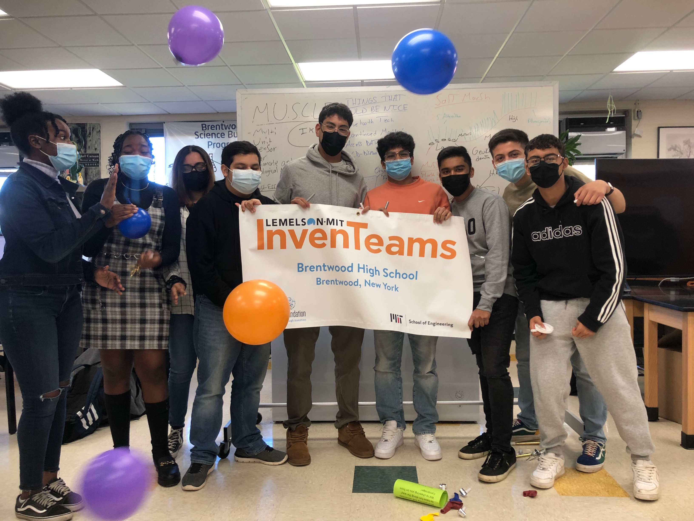
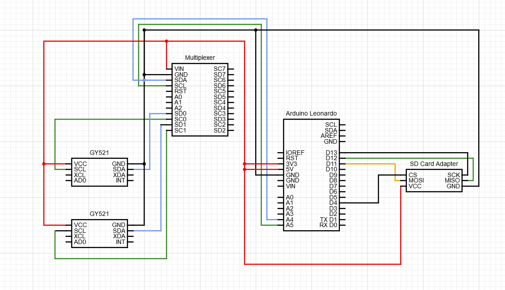
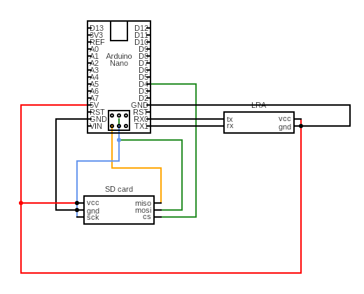
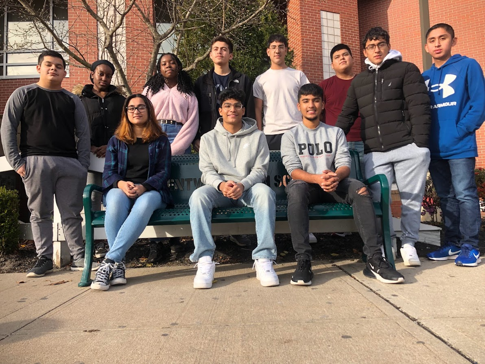

The Brentwood Lemelson MIT InvenTeam has recieved the L-MIT $10,000 grant, a STEM based competition for
pursuing young inventors
(Want More Info? Click here -> LemelsonMIT InvenTeams).
The InvenTeam consists of 11 members in
different sections: engineering/design, research, and finance/engagement.
The project pitched to the
annual
Lemelson-MIT Competition was a Multi Unit Sensor for Climate and Ecological monitoring (M.U.S.C.L.E);
More info on our project

M.U.S.C.L.E
The M.U.S.C.L.E is a cost effective, user friendly, water monitoring system that can be easily
accessible
and used by the general public.
Its job is to measure environmental conditions: temperature, pH levels,
salinity, and a muscle gaping sensor that the team is developing.
The idea revolves around salt marshes,
creating efficiency to the Atlantic coast Geukensia demissa (ribbed mussels).

Importance Of The M.U.S.C.L.E
Salt marshes are coastal wetlands which yield important ecological services to neighboring coastal
ecosystems like, preventing wave energy/storm surges.
They are vital for protecting shorelines, acting
as a
natural barrier from preventing erosion, and filtering runoff from excess nutrients which cause nitrogen
loading.
However, due to climate change driven sea level rise, and eutrophication, salt marshes are
degrading.
To restrict progressive destruction from our salt marshes, monitoring environmental factors
can
help us understand the marsh more and create
faster alternatives to prevent environmental damage.

The Schematics
The invention prioritizes Arduino board in a custom 3D printed waterproof-casing;
it utilizes ribbed
mussels
to track the changing environment through monitoring the gape of the shell,
or the angle of how much the
mussel opens.
 
Research
Prior research was done in the lab, determining that mussels gape less when stressed, caused by lack of food, nearby predators, and certain environmental factors or change. Ribbed mussel biosensor will indicate negative or positive changes in the enviornment. The team aims to target an audience to people who want to contribute in our community as well as pursuing environmental scientists that lack equipment. For any contact information, please contact us at bhsinventeam2021@gmail.com
